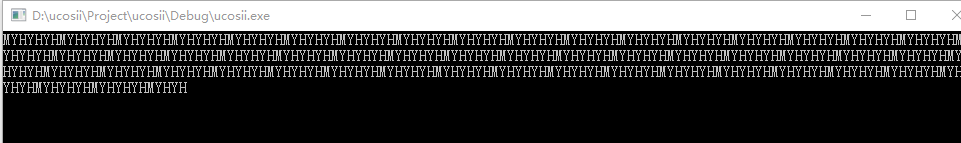
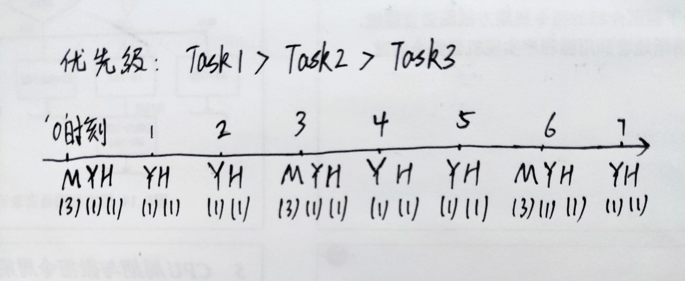
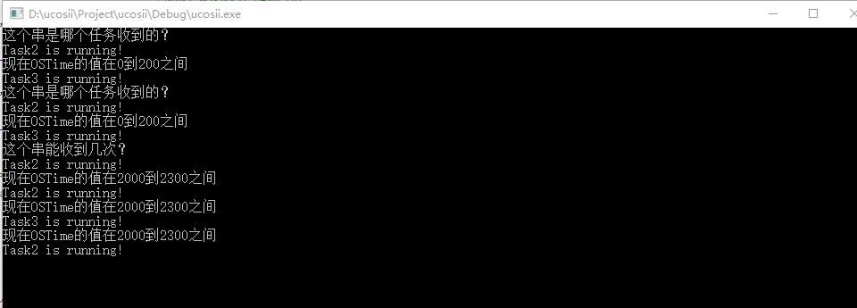
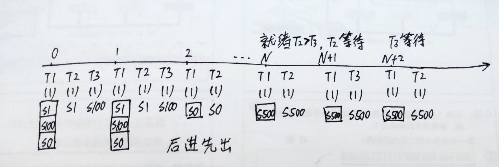

多任务调度实验
实验目的
编写延时分别为3s、1s和1s的三个任务，观察任务之间的交替运行次序，熟悉任务调度的过程。要求三个任务的输出分别为：M、Y和H，连续不换行显示。
实验代码
1
2
3
4
5
6
7
8
9
10
11
12
13
14
15
16
17
18
19
20
21
22
23
24
25
26
27
28
29
30
31
32
33
34
35
36
37
| #include "includes.h"
#define TASK1_PRO 1
#define TASK2_PRO 2
#define TASK3_PRO 3
OS_STK Task1Stk[TASK_STK_SIZE];
OS_STK Task2Stk[TASK_STK_SIZE];
OS_STK Task3Stk[TASK_STK_SIZE];
static void Task1(void *p_arg);
static void Task2(void *p_arg);
static void Task3(void *p_arg);
void TaskCreate(void){
OSTaskCreate(Task1, NULL, &Task1Stk, TASK1_PRO);
OSTaskCreate(Task2, NULL, &Task2Stk, TASK2_PRO);
OSTaskCreateExt(Task3, NULL, &Task3Stk, TASK3_PRO, TASK3_PRO, &Task3Stk[TASK_STK_SIZE - 1], TASK_STK_SIZE, NULL, 0);
}
static void Task1(void *p_arg){
p_arg = p_arg;
while (1){
printf("M");
OSTimeDlyHMSM(0, 0, 3, 0);
}
}
static void Task2(void *p_arg){
p_arg = p_arg;
while (1){
printf("Y");
OSTimeDlyHMSM(0, 0, 1, 0);
}
}
static void Task3(void *p_arg){
p_arg = p_arg;
while (1){
printf("H");
OSTimeDlyHMSM(0, 0, 1, 0);
}
}
|
实验结果


实验体会
第一次对操作系统的代码进行编写调试，深入了解了任务堆栈、创建任务和任务调度，任务间的调度是由cpu在就绪任务中选择最高优先级的任务。调用函数OSStart()之前先创建一个任务，并赋予它最高的优先级别，从而使它成为起始任务。
利用消息队列进行任务间通信实验
实验目的
仿照《嵌入式实时操作系统uCOS-II原理及应用》（第4版）例4-9，利用先进先出的方式组织消息，由任务一发送消息，任务二和任务三请求消息，三个任务的延时时间均为1s。
实验代码
1
2
3
4
5
6
7
8
9
10
11
12
13
14
15
16
17
18
19
20
21
22
23
24
25
26
27
28
29
30
31
32
33
34
35
36
37
38
39
40
41
42
43
44
45
46
47
48
49
50
51
52
53
54
55
56
57
58
59
60
61
62
63
64
65
66
67
68
69
70
71
72
73
74
75
76
77
78
79
80
81
82
83
84
| #include "includes.h"
#define N_MESSAGES 128
OS_STK TaskStk1[TASK_STK_SIZE];
OS_STK TaskStk2[TASK_STK_SIZE];
OS_STK TaskStk3[TASK_STK_SIZE];
char *ss;
char *s100;
char *s0;
char *s1;
char *s500;
void *MsgGrp[N_MESSAGES];
INT8U err;
OS_EVENT *Str_Q;
void Task1(void *data);
void Task2(void *data);
void Task3(void *data);
void TaskCreate(void){
Str_Q = OSQCreate(&MsgGrp[0], N_MESSAGES);
OSTaskCreate(Task1,
(void*)0,
&TaskStk1[TASK_STK_SIZE - 1],
0);
OSTaskCreate(Task2,
(void*)0,
&TaskStk2[TASK_STK_SIZE - 1],
3);
OSTaskCreate(Task3,
(void*)0,
&TaskStk3[TASK_STK_SIZE - 1],
4);
}
void Task1(void *pdata){
#if OS_CRITICAL_METHOD == 3
OS_CPU_SR cpu_sr;
#endif
pdata = pdata;
s0 = "这个串能收到几次？";
OSQPostFront(Str_Q, s0);
for (;;){
if (OSTimeGet() > 0 && OSTimeGet() < 200){
s100 = "现在OSTime的值在0到200之间";
OSQPostFront(Str_Q, s100);
s1 = "这个串是哪个任务收到的？";
OSQPostFront(Str_Q, s1);
}
if (OSTimeGet() > 2000 && OSTimeGet() < 2300){
s500 = "现在OSTime的值在2000到2300之间";
OSQPostFront(Str_Q, s500);
}
OSTimeDlyHMSM(0, 0, 1, 0);
}
}
void Task2(void *pdata){
#if OS_CRITICAL_METHOD == 3
OS_CPU_SR cpu_sr;
#endif
pdata = pdata;
for (;;){
ss = OSQPend(Str_Q, 0, &err);
printf("%s\n", ss);
printf("Task2 is running!\n");
OSTimeDlyHMSM(0, 0, 1, 0);
}
}
void Task3(void *pdata){
#if OS_CRITICAL_METHOD == 3
OS_CPU_SR cpu_sr;
#endif
pdata = pdata;
for (;;){
ss = OSQPend(Str_Q, 0, &err);
printf("%s\n", ss);
printf("Task3 is running!\n");
OSTimeDlyHMSM(0, 0, 1, 0);
}
}
|
实验结果


实验体会
通过本次实验进一步掌握了消息队列相当于共用一个任务等待表的消息邮箱数组，向指针数组插入消息指针有两种方式：FIFO和 LIFO，本实验采用的是LIFO（后进先出），任务请求消息队列需要调用函数OSQPend()。